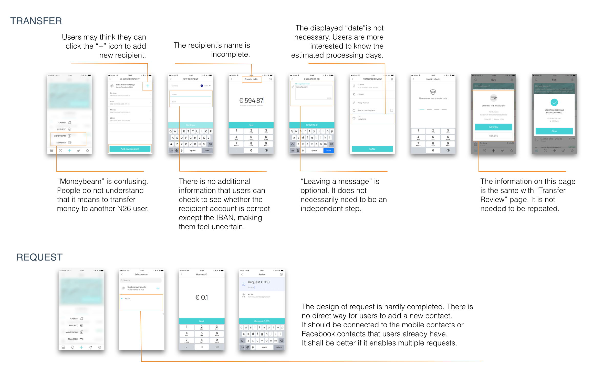

THE BRIEF
I conducted this case study aiming to improve usability of a mobile banking application named N26. Money transfer is one of the core function when using a banking service. I analyzed the original design and proposed redesigns for improvements.
Original Design Critiques

interviews & Insights
Three participants have been interviewed (2 of them are N26 user), so as to know more about their needs. There are some interesting insights that could inspire the design.
- One participant described the last time he used N26. It was when he and three of his friends rent an Airbnb in Madrid. He paid cost in advance and he needed to request three others to share equally after their travel. This story inspired me to integrate a "Request multiple contacts" feature, that allows user to send several requests at the same time.
- Two participants mentioned that they need to double check the recipient’s bank account when operating a transfer. When they input the recipient’s IBAN, the online banking service will generate the BIC automatically, which they would check carefully with the invoice. This inspired me to design cognitive friction in the process of inputting recipient's bank account.